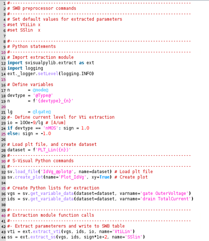
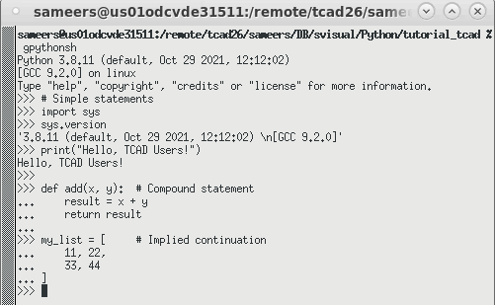
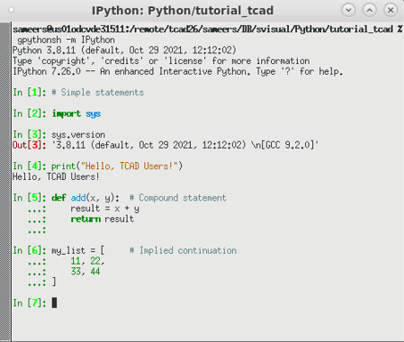

main menu
| module menu
| << previous section
| next section >>
main menu
| module menu
| << previous section
| next section >>
Python Language
1. Getting Started
1.1 Overview
1.2 Using the Python Interpreter
1.3 Basic Python Conventions
1.4 Online Help
1.5 Resources and Further Reading
Objectives
- To introduce how the Python language is used in TCAD tools.
- To demonstrate how to use the Python interpreter.
1.1 Overview
Python is a high-level general-purpose interpreted object-oriented language. TCAD Sentaurus tools such as Sentaurus Visual Python Mode, Sentaurus Workbench Optimization Framework, Mystic, and Sentaurus Process Explorer use Python. Therefore, it is advantageous to know the basics of Python and to learn about object-oriented programming concepts such as objects and classes.
Figure 1 shows a typical Sentaurus Visual Python script, which consists of several types of command or statement:
- Sentaurus Workbench preprocessor commands
- Python statements, including import statements for importing Sentaurus Visual Python extraction modules
- Sentaurus Visual Python commands
- Extraction module function calls

Figure 1. Sentaurus Visual Python script.
This section focuses on the basics of Python and how to use it with Sentaurus Visual Python Mode. Refer to the following sections in the TCAD Sentaurus Tutorial:
- For Sentaurus Workbench preprocessor commands, see Section 8.2 Project Variables
- For Sentaurus Visual Python, see Section 6.7 Sentaurus Visual in Python Mode
- For Sentaurus Visual Python Extraction module functions or methods, see Section 6.8 Sentaurus Visual Python Extraction Modules and Tcl Extraction Libraries
1.2 Using the Python Interpreter
You can work with Python in several ways:
- Standard Python shell
- IPython (interactive Python)
- JupyterLab including Jupyter Notebook
- TCAD Python distributions from Synopsys:
- gpythonsh
Synopsys distributes a Python interpreter, gpythonsh, with TCAD tools. This utility is a general-purpose Python shell you can use at the command prompt in interactive mode or batch mode. You can also use it as a Python tool in your simulation flow in Sentaurus Workbench. - Sentaurus Visual Python Mode
- Mystic GUI (see Section 3.4 Mystic Graphical User Interface)
- ATK-Python
- gpythonsh
1.2.1 Interactive Mode
You can start an interactive Python shell with the command:
> gpythonsh

Figure 2. Python shell (interactive mode).
In the interactive mode of Python, you can enter Python code at the primary prompt >>> and press the Enter key to execute the code. In the case of compound statements or statements that span multiple lines, the primary prompt changes to the secondary prompt ... as shown in Figure 2.
The interactive Python shell is also known as REPL, which is an acronym for read-eval-print-loop.
Python REPL also supports TAB command completion using the Tab key for autocompletion.
1.2.1.1 Using IPython
IPython, interactive Python, is a powerful shell with advanced features such as:
- Syntax highlighting (see Figure 3)
- TAB command completion using the Tab key for autocompletion and exploration of the contents of an object
- Better multiline editing support, for example, the cursor can be moved up or down using the Up Arrow and Down Arrow keys, and automatic indentation for compound statements
- Magic commands starting with the percentage (%) sign
- Using shell commands in IPython by prefixing the shell command with an exclamation mark (!)
- Using the question mark (?) for online help (see Section 1.4 Online Help)

Figure 3. IPython shell.
The IPython module is included in TCAD Python. To launch gpythonsh with the IPython module, use the following command:
> gpythonsh -m IPython Python 3.8.12 (default, Sep 22 2022, 16:14:21) Type 'copyright', 'credits' or 'license' for more information IPython 7.34.0 -- An enhanced Interactive Python. Type '?' for help. In [1]:
IPython REPL differs slightly compared to standard Python REPL. The input prompt is In [N]: instead of >>>, where N is a number. The results are displayed with an Out[N] prompt.
The sections of this Tutorial use > to denote the command prompt.
The magic command %quickref displays a quick reference of various IPython commands:
In [1]: %quickref
IPython -- An enhanced Interactive Python - Quick Reference Card
================================================================
obj?, obj?? : Get help, or more help for object (also works as
?obj, ??obj).
?foo.*abc* : List names in 'foo' containing 'abc' in them.
%magic : Information about IPython's 'magic' % functions.
Magic functions are prefixed by % or %%, and typically take their arguments
without parentheses, quotes or even commas for convenience. Line magics take a
single % and cell magics are prefixed with two %%.
Example magic function calls:
%alias d ls -F : 'd' is now an alias for 'ls -F'
alias d ls -F : Works if 'alias' not a python name
alist = %alias : Get list of aliases to 'alist'
...
System commands:
!cp a.txt b/ : System command escape, calls os.system()
...
History:
_i, _ii, _iii : Previous, next previous, next next previous input
...
Remember: TAB completion works in many contexts, not just file names
or python names.
The following magic functions are currently available:
...
%cd:
Change the current working directory.
%clear:
Clear the terminal.
%magic:
Print information about the magic function system.
%precision:
Set floating point precision for pretty printing.
%prun:
Run a statement through the python code profiler.
%pwd:
Return the current working directory path.
%quickref:
Show a quick reference sheet
%run:
Run the named file inside IPython as a program.
%timeit:
Time execution of a Python statement or expression
...
This output is truncated (indicated by ...) and shows some of the most useful IPython commands.
You can learn more about specific magic commands by using a question mark after the command. For example, to see help for %precision, specify:
In [2]: %precision?
Docstring:
Set floating point precision for pretty printing.
Can set either integer precision or a format string.
If numpy has been imported and precision is an int,
numpy display precision will also be set, via ``numpy.set_printoptions``.
If no argument is given, defaults will be restored.
Examples
--------
::
In [1]: from math import pi
In [2]: %precision 3
Out[2]: u'%.3f'
In [3]: pi
Out[3]: 3.142
...
For more details about navigating the help system in both gpythonsh and IPython, see Section 1.4 Online Help.
sTo learn more about IPython, refer to the IPython Tutorial and IPython: Beyond Normal Python.
1.2.1.2 Using Sentaurus Visual Python Mode
You can start Sentaurus Visual Python in interactive mode and use the Sentaurus Visual Console as an interactive Python interpreter by using the -p option:
> svisual -p &
{kind=link}
Figure 4. Sentaurus Visual Python Mode. (Click image for full-size view.)s
The primary and secondary prompts in the Console are the same as those in gpythonsh.
As previously mentioned, a Python interactive shell is also known as REPL (read-eval-print-loop). After you enter Python expressions and press the Enter key, Python reads the code, evaluates it (finds the value of the expression), prints the result, and waits for you to enter the next line of code. For example:
>>> 1 + 2 3 >>> 'Hello, TCAD Users!' 'Hello, TCAD Users!'
You can also use the built-in print function to display the result:
>>> print(1 + 2)
3
>>> print('Hello, TCAD Users!')
Hello, TCAD Users!
Because Python REPL prints the result of an expression automatically, you usually do not have to use print statements in interactive mode. However, within a script, you must use print statements to see the results because expression results are not echoed automatically.
Python functions are similar to Tcl procedures. To use Python functions, you must pass input to the function, enclosed in parentheses. In both calls to the print function, a single input was passed; the expression 1 + 2 in the first call and the string 'Hello, TCAD Users!' in the second call.
Expressions, strings, and functions are discussed in the following sections:
By default, gpythonsh prints the Python version when it is launched. You can also determine the Python version by using the version attribute of the sys module:
>>> import sys # Import a library module called sys >>> sys.version '3.8.12 (default, Sep 22 2022, 16:14:21) \n[GCC 9.2.0]'
You can exit gpythonsh or Sentaurus Visual Python Mode by using the quit() command:
>>> quit()
You can also exit gpythonsh and IPython by pressing Ctrl+D.
1.2.2 Script Mode
Instead of entering code in Python REPL, you can save code in a file called a script and then run Python in script mode to execute the script. By convention, Python scripts have the extension .py.
You can run a Python script from the command line with gpythonsh or Sentaurus Visual Python using:
> gpythonsh source.py > svisual -b source.py
The -b option runs Sentaurus Visual in batch mode.
1.2.3 Loading Scripts in Interactive Mode
A Python script source.py can be loaded from Python REPL (standard Python, IPython, and Sentaurus Visual) with the import statement:
from source import *
For example, consider the script add.py:
# Script: add.py x = 1 y = 2 z = x + y
You can load it from Python REPL using:
>>> from add import * >>> print(z) 3
This type of import statement is known as a wildcard import since it imports all the variables and functions defined in the script. The import statement is further discussed in Section 3.1.2 Using Modules.
The scripts discussed here are available in the directory
Applications_Library/GettingStarted/python/py_basics. The code examples
that must be entered at the interactive prompt are also available in this
Sentaurus Workbench project.
Click to view the primary file
python_pyt.py.
You can also use the %run magic command to run a Python script from the IPython prompt:
In [1]: %run add.py In [2]: print(z) 3
As discussed in Section 3.1.2.1 Modules as Objects, Sentaurus Visual Python imports the svisual package by using:
import svisual as sv
It defines the function sv.load_script_file for running a Python script, either in interactive mode or batch mode. For example:
sv.load_script_file('add.py')
1.2.4 Post-Run Interactive Mode
If you run a script from the command line and pass the -i option, then Python first runs the script and then starts the interactive shell (>>> prompt):
> gpythonsh -i source.py > gpythonsh -m IPython -i source.py
You can then access all the variables, functions, and classes defined in the script from inside Python REPL. This is useful as a debugging tool. For example:
> gpythonsh -i add.py >>> z 3
You can do the same with Sentaurus Visual Python Mode:
> svisual source.py
1.2.5 JupyterLab and Jupyter Notebook
You can run Python code interactively in Jupyter Notebook, which is part of the JupyterLab interface. JupyterLab is an open-source web application. You can use it to create documents that combine explanatory text, mathematics, Python computations, and visualization. You can share notebooks with others and they can run the code in the notebook. You can also convert the Jupyter Notebook into other format types, including HTML, executable Python script, LaTEX, and PDF.
You can launch Jupyter Notebook as part of JupyterLab. JupyterLab is not part of the TCAD Python platform and needs to be installed separately.
Jupyter Notebook primarily has two types of cell:
- Markdown cells are used to add text.
- Code cells are used to add Python code.
A Python shell allows you to enter and run only one statement at a time. A Jupyter Notebook contains code cells in which you can enter multiple statements similar to a script and then run them sequentially. The code cell allows you to edit and write new code, with full syntax highlighting and tab completion. The input prompt before each code cell is [N]: instead of >>> or In [N]:, where N is a number.
You run the code in a code cell by pressing Shift+Enter. Results are displayed in the notebook as the output of the cell. The output is not limited to text.
For more information, see The JupyterLab Interface and The Jupyter Notebook.
1.2.6 Online Tools for Python
Many online tools are available for running Python programs, for example, Online Python and Python Tutor. Python Tutor helps you learn Python, C, and other languages and is described in Section 2.5.1 Python Tutor Visualization.
1.3 Basic Python Conventions
This section discusses the basic Python conventions such as how to comment Python code, the structure of a typical Python program, and different types of Python statement.
1.3.1 Commenting Python Code
Similar to Tcl, the Python comment character is the hash (#) character. The rest of the line after the comment character is ignored.
The # character can be used to comment out a single line or to create inline comments. You can comment out multiple lines of Python code using triple-quoted strings. As discussed in Section 2.2.5.1 Strings, triple-quoted strings can be created by enclosing characters, either in single quotation marks (') or double quotation marks ("). The following script illustrates different types of comment:
# Script: comment.py # This script illustrates various comment types # This is a single-line comment """ This is a multiline comment x = 10 y = 20 w = x + y print(w) """ x = 1 # This is an inline comment y = 2 z = x + y print(z)
1.3.2 Python Program Structure
Consider the following Python script add.py:
# Script: add.py x = 1 y = 2 z = x + y print(z)
Python scripts can be decomposed into statements, expressions, and objects, as follows:
- Scripts contain statements. This example contains four statements.
- Statements contain expressions (discussed in Section 2.3 Arithmetic Operators and Expressions). For example, x + y is an expression. Even literals such as 1 and 2 are considered to be expressions.
- Expressions create and process objects (discussed in Section 3.3 Objects and Classes). For example, the first two statements create the int objects 1 and 2. Evaluating the expression x + y creates another int object 3.
1.3.3 Python Statements
Python statements are instructions that Python can execute. In general, the Python interpreter executes statements sequentially in script mode. In interactive mode, you enter a statement, press the Enter key, and then wait for the statement to run to completion before entering another statement.
Python has simple statements and compound statements.
1.3.3.1 Simple Statements and Indentation
According to the Python Language Reference: A simple statement is comprised within a single logical line.
Assignment statements, print statements, function calls and other expressions, and return statements are examples of simple statements.
The number of spaces at the beginning of a code line is known as indentation. In other programming languages such as C or Tcl, indentation is used to make code more readable. In Python, indentation is important since it is used to structure the code.
At the interactive prompt as well as in a Python script, you must start entering each line of code in the leftmost column, with no leading spaces. Simple statements end with a newline. So you terminate simple statements by pressing the Enter key at the end of the statement. Pressing the Enter key also evaluates the simple statement.
For example, each statement in the following code is a simple statement:
>>> # Following statements have no space to the left >>> x = 1 # assignment statement >>> y = 2 >>> z = x + y >>> print(z) # print statement 3
Using the indentation rule for simple statements, these can be combined to create the script add.py:
# Script: add.py # Following simple statements have no space to the left x = 1 y = 2 z = x + y print(z)
A sequence of statements having the same indentation is called a code block. For example, the statements shown above form a top-level code block since all statements start at the leftmost column and have no space to the left.
If your code is not indented correctly, then Python prints an error message and stops executing the code:
>>> x = 1 # no space to the left
>>> y = 2 # incorrect indentation: one space to the left
File "<stdin>", line 1
y = 2 # incorrect indentation: one space to the left
^
IndentationError: unexpected indent
1.3.3.2 Compound Statements and Indentation
Compound statements have other statements nested inside them. In general, they span multiple lines. The def, if, for, and class statements are compound statements.
For example, the def statement is used to define a function:
>>> # Function definition >>> def add(x, y): # header line: 0 space ... result = x + y # function body: 4 spaces ... return result # function body: 4 spaces ... >>>
When you enter a compound statement on the Python prompt (>>>) and press the Enter key, the prompt changes to ... as shown here and in Figure 4. You must terminate multiline statements at the interactive prompt with a blank line. So, after entering the last character in a compound statement, you must press the Enter key twice to execute such statements. In a script, all blank lines are ignored. So, you do not need the blank line after compound statements, although PEP 8 Style Guide recommends surrounding top-level function definitions with two blank lines:
# Script: add_fn.py
def add(x, y): # header line: 0 space
result = x + y # function body: 4 spaces
return result # function body: 4 spaces
z = add(1, 2)
print(z)
The first line of a compound statement is known as the header line. Similar to simple statements, you must start entering the header line in the leftmost column. The header line is followed by a block of nested statements. Nested statements must be indented one or more spaces. Each nested statement should be indented by the same number of spaces.
In Python documentation, a code block that is part of a compound statement is called a suite.
Python code blocks can be indented using either tabs or spaces. As discussed in the QuantumATK Tutorial, you should consistently use either tabs or spaces. In addition, the PEP 8 Style Guide recommends the use of four spaces per indentation level.
1.3.3.3 Multiple Simple Statements on One Line
You can enter several simple statements on one line, separated by semicolons. For example:
>>> x = 1; y = 2; z = x + y; print(z) 3
This is not recommended by the PEP 8 Style Guide because it can make code less readable.
1.3.3.4 Line Continuation
For readability, long statements can span multiple lines, in which case, you should use line continuation.
Although not recommended by the PEP 8 Style Guide, long Python statements can be separated over several lines by ending each line with a backslash (\). Consider the following simple statement:
>>> my_list = [11, 22, 33, 44, 55, 66, 77, 88]
It can be written over multiple lines as follows:
>>> # Line continuation using \ >>> my_list = [11, 22, 33, 44, \ ... 55, 66, 77, 88] >>> my_list [11, 22, 33, 44, 55, 66, 77, 88]
Similar to entering compound statements, entering such simple statements over multiple lines also changes the Python prompt to ... (see Figure 4). Unlike compound statements, you do not have to terminate such statements with a blank line.
In Python, the preferred way of wrapping long lines is by using implied line continuation inside parentheses, brackets, or braces. For example:
>>> # Implied continuation inside brackets >>> my_list = [ ... 11, 22, 33, 44, ... 55, 66, 77, 88, ... ] >>> my_list [11, 22, 33, 44, 55, 66, 77, 88]
Long lines can also be split over multiple lines by wrapping expressions in parentheses. For example, the long line x = 11 + 22 + 33 + 44 + 55 + 66 can be written over multiple lines:
>>> # Breaking long lines using parentheses >>> x = ( ... 11 + 22 ... + 33 + 44 ... + 55 + 66 ... ) >>> x 231
The indentation of the continuation line does not matter:
>>> x = ( ... 11 + 22 ... + 33 + 44 ... + 55 + 66 ... ) >>> x 231
1.4 Online Help
You can request information about Python objects by using the built-in help function:
>>> help(print) # help on built-in print function
Help on built-in function print in module builtins:
print(...)
print(value, ..., sep=' ', end='\n', file=sys.stdout, flush=False)
Prints the values to a stream, or to sys.stdout by default.
Optional keyword arguments:
file: a file-like object (stream); defaults to the current sys.stdout.
sep: string inserted between values, default a space.
end: string appended after the last value, default a newline.
flush: whether to forcibly flush the stream.
In IPython, you can use ? after the function name as a shorthand for accessing online help. For example, to request help for the print function:
In [1]: print? Docstring: print(value, ..., sep=' ', end='\n', file=sys.stdout, flush=False) Prints the values to a stream, or to sys.stdout by default. Optional keyword arguments: file: a file-like object (stream); defaults to the current sys.stdout. sep: string inserted between values, default a space. end: string appended after the last value, default a newline. flush: whether to forcibly flush the stream. Type: builtin_function_or_method
For example, to request help for the int object:
In [2]: int? Init signature: int(self, /, *args, **kwargs) Docstring: int([x]) -> integer int(x, base=10) -> integer Convert a number or string to an integer, or return 0 if no arguments are given. If x is a number, return x.__int__(). For floating point numbers, this truncates towards zero. ...
You can see more detailed information about the int object by using the help function:
In [3]: help(int)
Help on class int in module builtins:
class int(object)
| int([x]) -> integer
| int(x, base=10) -> integer
|
| Convert a number or string to an integer, or return 0 if no arguments
| are given. If x is a number, return x.__int__(). For floating point
| numbers, this truncates towards zero.
|
| If x is not a number or if base is given, then x must be a string,
| bytes, or bytearray instance representing an integer literal in the
| given base. The literal can be preceded by '+' or '-' and be surrounded
| by whitespace. The base defaults to 10. Valid bases are 0 and 2-36.
| Base 0 means to interpret the base from the string as an integer literal.
| >>> int('0b100', base=0)
| 4
|
| Built-in subclasses:
| bool
:
Notice the colon : at the end of this output. Whenever a colon is displayed, you can press the Enter key to read one more line or press the space bar to read the next page of the help message. You can request help on using the help system by pressing the h key. You can exit the help screen by pressing the q key.
You can use the built-in dir function to find all the variables and functions defined in a module:
>>> import math # Import math module
>>> # Get list of variables and functions defined in math module
>>> print(dir(math))
[... 'acos', 'acosh', 'asin', 'asinh', 'atan', 'atan2', 'atanh', 'ceil',
'comb', 'copysign', 'cos', 'cosh', 'degrees', 'dist', 'e', 'erf', 'erfc',
'exp', 'expm1', 'fabs', 'factorial', 'floor', 'fmod', 'frexp', 'fsum',
'gamma', 'gcd', 'hypot', 'inf', 'isclose', 'isfinite', 'isinf', 'isnan',
'isqrt', 'ldexp', 'lgamma', 'log', 'log10', 'log1p', 'log2', 'modf', 'nan',
'perm', 'pi', 'pow', 'prod', 'radians', 'remainder', 'sin', 'sinh', 'sqrt',
'tan', 'tanh', 'tau', 'trunc']
>>> help(math) # help on math module
Help on module math:
NAME
math
MODULE REFERENCE
https://docs.python.org/3.8/library/math
...
DESCRIPTION
This module provides access to the mathematical functions
defined by the C standard.
FUNCTIONS
acos(x, /)
Return the arc cosine (measured in radians) of x.
acosh(x, /)
Return the inverse hyperbolic cosine of x.
...
DATA
e = 2.718281828459045
inf = inf
nan = nan
pi = 3.141592653589793
tau = 6.283185307179586
>>> help(math.sin) # help on sine function in math module
Help on built-in function sin in module math:
sin(x, /)
Return the sine of x (measured in radians).
1.5 Resources and Further Reading
- The Python Tutorial
- The Python Standard Library
- The Python Glossary
- Python Tutor: Embeddable Web-Based Program Visualization for CS Education, P. J. Guo
- PEP 8 — the Style Guide for Python Code
- T. Beuzen, Python Programming for Data Science
- J. DeNero, Composing Programs
- A. B. Downey, Think Python: How to Think Like a Computer Scientist, 2nd ed., online version and PDF version
- R. Johansson, Lectures on scientific computing with Python
- R. Johansson, Numerical Python, 2nd ed., 2019
- Q. Kong, T. Siauw, and A. Bayen, Python Programming and Numerical Methods: A Guide for Engineers and Scientists
- M. Lutz, Learning Python, 5th ed., O'Reilly
- D. J. Malan, CS50's Introduction to Programming with Python
- W. McKinney, Python for Data Analysis, 3rd ed., Open Edition
- M. Newman, Computational Physics with Python
- M. Pilgrim, Dive Into Python 3
- R. Sedgewick, K. Wayne, and R. Dondero, Introduction to Programming in Python
- J. VanderPlas, Python Data Science Handbook
- Stanford CS 41 Course Reader
- Introduction to Numerical Computing With NumPy | SciPy 2021 (Video)
- Learn Python Through Data Processing in Pandas | SciPy 2021 (Video)
- NumPy Tutorials
- SciPy Lecture Notes
- pandas: Getting started tutorials
main menu | module menu | << previous section | next section >>
Copyright © 2022 Synopsys, Inc. All rights reserved.